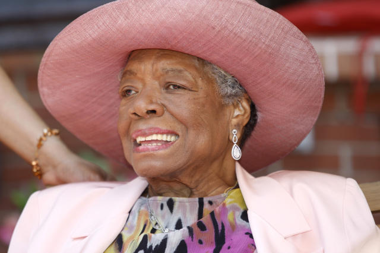
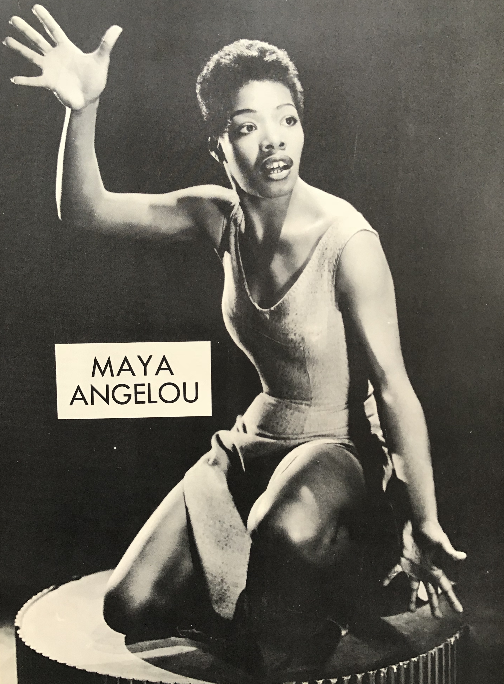

"Love liberates. It doesn't just hold, that's ego. Love Liberates."
"There is no greater agony than bearing an untold story inside you."
"First best is falling in love. Second best is being in love. Least best is falling out of love. But any of it is better than never having been in love"
During her life time Maya Angelou was very much beloved by many. She had many critics many of of which tried to ban her work, doing so successfully in FairFax, Virginia. Most notably she has been called the most banned author in the U.S. for her book I know Why the Caged Bird Sings due to concerns about her books containing references to child molestation, lesbianism, teen sex scenes and teen pregnancy. Regardless of these claims she was inducted during the 13th annual California hall of fame by First Partner, Governor of the State of California Jennifer Siebel Newsom and accepted by her son Guy Johnson. She has also recieved 3 grammys, the noble peace prize, the National Book Award, a Pulitzer Prize and an Emmy. She was also awarded the Presidential Medal of Freedom by President Barack Obama in 2011. Her legacy continues to this day in the her works both written and in film.
"People will forget what you said, people will forget what you did, but people will never forget how you made them feel"

"I've Learned that whenever I decide something with an open heart, I usually make the right decision."
I put the kindle editions because it's my preference but hard copies are availale too.
"SYou can only become truly accomplished at something you" love.
Visit here for More on Ms.Angelou! for anything and everything Maya additional reference material